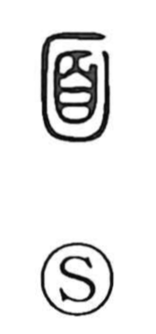

面

Uncategorized
Kun: omote, omo, tsura | On: men
face ・ surface ・ front ・ to face
Explanation
Shirakawa understands 面 as a pictograph of a mask with only the eyes showing. In ancient rites, various masks were worn for divine ceremonies; related character forms such as 戲 and 劇 even suggest performers equipped with tiger-skin headgear. From this ritual mask, the graph broadened in sense to the human face (ganmen), and then to the front or visible surface, and further to the idea of facing or standing opposite. By extension, it can also imply turning one’s face away from something.